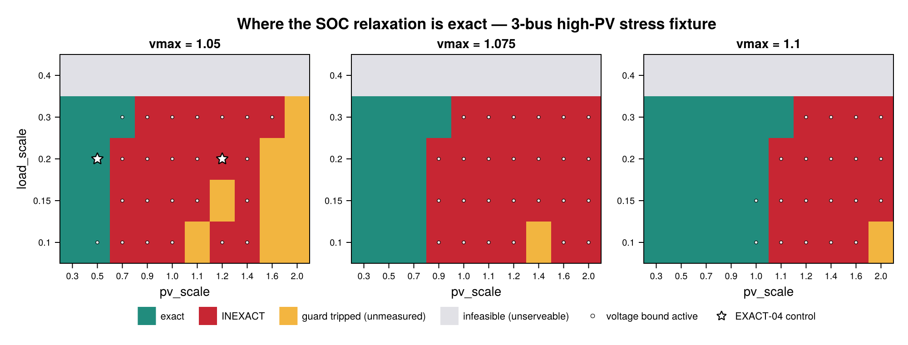
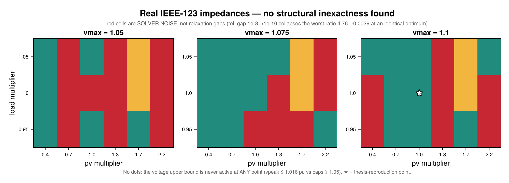

SOC Relaxation Applicability — where the branch-flow relaxation is exact
The operational layer prices a convex social-welfare problem: the SOC branch-flow relaxation replaces the physical equality l·v = P² + Q² with the cone l·v ≥ P² + Q². Prices are the duals of that convex program. So a reader is entitled to ask: where does the relaxation actually hold, and how would you know if it didn't?
This page answers both, and reports one result honestly negative and one that flatly refuses to generalize between feeders.
The detector is free
assert_socp_exact! (src/models/exactness.jl) already computes, per branch and hour,
\[\mathrm{gap}[b,t] = \bigl|\, l_{b,t}\, v_{i(b),t} - (P_{b,t}^2 + Q_{b,t}^2) \,\bigr|\]
against the scale-free bound atol + rtol·max(|l·v|, |P²+Q²|). It costs nothing beyond the SOCP solve that already happened — no AC/Ipopt oracle is involved anywhere on this page. Define ratio = gap / bound; ratio ≤ 1 is the exactness classification.
Two diagnostics come free alongside it and make a map interpretable rather than merely colourful: whether the upper voltage bound is active (v[j,t] ≈ vmax² — a plain JuMP variable bound, so reduced_cost is available too) and whether reverse flow occurs (P[b,t] < 0). The classical exactness conditions (Farivar & Low 2013; Gan et al. 2015) turn on exactly those.
using TSODSO
# `TSODSO.JuMP` rather than `using JuMP`: the docs environment pins a deliberately minimal
# dependency set, and JuMP is already loaded as a dependency of TSODSO — so this reaches `value`
# and `optimizer_with_attributes` without adding a dep and re-resolving `docs/Manifest.toml`
# (which CI requires to stay in Julia-version lockstep).
using TSODSO.JuMP
using Printf
const T = 2424Digitized profiles, byte-identical to test/fixtures_phase4.jl / fixtures_phase7.jl.
const TEMP = Float64[
19,
18,
17,
16,
16,
17,
19,
21,
23,
26,
28,
30,
31,
32,
32,
31,
29,
27,
25,
23,
22,
21,
20,
19,
]
const PRICE = Float64[
3.8,
3.7,
3.6,
3.6,
3.7,
4.0,
4.8,
5.8,
6.5,
6.2,
5.9,
5.7,
5.6,
5.8,
6.0,
6.8,
8.2,
9.0,
8.6,
7.4,
6.2,
5.2,
4.4,
4.0,
]
function cone_stats(ctx, feeder; atol = 1e-6, rtol = 1e-4)
pf = ctx.meta[:pf_vars]
maxgap = maxratio = 0.0
n_at_vmax = 0
min_P, vpeak = Inf, 0.0
for t in 1:T
for (b, br) in enumerate(feeder.branches)
lhs = value(pf.l[b, t]) * value(pf.v[br.from, t])
rhs = value(pf.P[b, t])^2 + value(pf.Q[b, t])^2
g = abs(lhs - rhs)
maxgap = max(maxgap, g)
maxratio = max(maxratio, g / (atol + rtol * max(abs(lhs), abs(rhs))))
min_P = min(min_P, value(pf.P[b, t]))
end
for bus in feeder.buses
bus.is_root && continue
v = value(pf.v[bus.id, t])
vpeak = max(vpeak, sqrt(max(v, 0.0)))
v >= bus.vmax^2 - 1e-7 && (n_at_vmax += 1)
end
end
return (; maxgap, maxratio, n_at_vmax, min_P, vpeak)
endcone_stats (generic function with 1 method)Substrate A — the 3-bus high-PV stress fixture (computed live)
A purpose-built fixture (test/fixtures_phase4.jl): low-impedance r = x = 0.05 branches and a tight voltage band, so PV back-feed swings voltage fast and the overvoltage/reverse-flow mechanism that breaks exactness can actually fire. Everything below runs at documentation build time.
feeder_3bus(; vmax = 1.05) = Feeder(
[Bus(1, 0.95, vmax, true), Bus(2, 0.95, vmax, false), Bus(3, 0.95, vmax, false)],
[Branch(1, 2, 0.05, 0.05, 99.0), Branch(2, 3, 0.05, 0.05, 99.0)],
1,
)
function house_3bus(bus; pv_scale, load_scale)
prof = generate_profiles(seed = 20260406 + bus, T = T)
return Aggregator(
bus,
0.95,
[
Thermostatic(bus, 0.2, 0.05, 15.0, 30.0, 22.0, 0.0, 1.0, 0.5, TEMP),
Deferrable(bus, 8, 16, 1.0, 0.5, 0.5),
PVBattery(
bus,
0.95,
1.0,
0.1,
0.0,
0.2,
0.1,
3.8,
6.2,
8.9,
Float64[pv_scale * p for p in prof.pv],
),
],
Float64[load_scale * d for d in prof.demand],
)
endhouse_3bus (generic function with 1 method)rtol_exact = 1e6 neutralizes solve_welfare's own PF-04 gate so an inexact solve is returned for classification instead of refused — the diagnostic-override pattern already used in test/test_ac_oracle.jl. It changes no src/ code and weakens nothing for any other caller. Non-solved points are split by cause: infeasible is legitimate white space (the feeder cannot serve that operating point inside its voltage band), a tripped model guard is genuinely unmeasured. Neither is ever silently dropped.
function sweep_3bus(pvs, lds, vms)
rows = NamedTuple[]
for vmax in vms, ls in lds, ps in pvs
f = feeder_3bus(; vmax = vmax)
aggs = [house_3bus(b; pv_scale = ps, load_scale = ls) for b in 2:3]
push!(
rows,
try
ctx, _, _ = solve_welfare(
f,
ConvexBranchFlow(),
aggs;
T = T,
λ₀ = PRICE,
allow_export = true,
rtol_exact = 1e6,
)
s = cone_stats(ctx, f)
(;
vmax,
load = ls,
pv = ps,
ratio = s.maxratio,
atvmax = s.n_at_vmax,
vpeak = s.vpeak,
minP = s.min_P,
class = s.maxratio <= 1 ? "exact" : "inexact",
)
catch err
msg = sprint(showerror, err)
(;
vmax,
load = ls,
pv = ps,
ratio = NaN,
atvmax = -1,
vpeak = NaN,
minP = NaN,
class = occursin("INFEASIBLE", msg) ? "infeasible" :
occursin("complementarity", msg) ? "guard" : "solver",
)
end,
)
end
return rows
end
PV_3BUS = [0.3, 0.5, 0.7, 0.9, 1.0, 1.1, 1.2, 1.4, 1.6, 2.0]
LOAD_3BUS = [0.10, 0.15, 0.20, 0.30, 0.40]
VMAX_3BUS = [1.05, 1.075, 1.10]
rows_3bus = sweep_3bus(PV_3BUS, LOAD_3BUS, VMAX_3BUS)
for cls in ("exact", "inexact", "infeasible", "guard")
n = count(r -> r.class == cls, rows_3bus)
n > 0 && @printf("%-11s %3d\n", cls, n)
endexact 43
inexact 66
infeasible 30
guard 11The controls that make this map trustworthy
A sweep that reports "everything is exact" is worthless unless it can also reproduce a point already known to be inexact — otherwise that outcome is indistinguishable from a fixture in which the mechanism cannot fire. (An earlier attempt at this map swept a network whose impedances are too low to move voltage; it returned 111/111 exact and was pure artifact.) Both EXACT-04 control points are therefore asserted live:
ctl(rs, ps, ls, vm) = only(filter(r -> r.pv == ps && r.load == ls && r.vmax == vm, rs))
c_exact = ctl(rows_3bus, 0.5, 0.20, 1.05)
c_inexact = ctl(rows_3bus, 1.2, 0.20, 1.05)
@assert c_exact.class == "exact"
@assert c_inexact.class == "inexact"
@printf(
"pv=0.5 -> %s (ratio %.4g, vpeak %.5f)\npv=1.2 -> %s (ratio %.4g, vpeak %.5f)\n",
c_exact.class,
c_exact.ratio,
c_exact.vpeak,
c_inexact.class,
c_inexact.ratio,
c_inexact.vpeak
)pv=0.5 -> exact (ratio 0.002732, vpeak 1.03986)
pv=1.2 -> inexact (ratio 9609, vpeak 1.05000)vpeak ≈ 1.04 at the exact control independently matches the fixture's own documented "≈1.04 pu, clear over-voltage with headroom below the cap" calibration note.
The boundary, quantified
Largest pv_scale still exact, per (vmax, load):
print("load ", join([@sprintf("vmax=%-7s", v) for v in VMAX_3BUS]), "\n")
for ls in LOAD_3BUS
print(@sprintf("%-6s", ls))
for vm in VMAX_3BUS
ok = filter(r -> r.vmax == vm && r.load == ls && r.class == "exact", rows_3bus)
print(@sprintf("%-12s", isempty(ok) ? "—" : string(maximum(r.pv for r in ok))))
end
println()
endload vmax=1.05 vmax=1.075 vmax=1.1
0.1 0.5 0.7 1.0
0.15 0.5 0.7 1.0
0.2 0.5 0.7 1.0
0.3 0.7 0.9 1.1
0.4 — — —Voltage headroom is the first-order control; load is second-order. Each +0.025 pu of headroom buys roughly +0.2 of pv_scale, near-linearly, while load moves the boundary by at most one grid step across its whole swept range. The load = 0.40 row is infeasible throughout — the fixture simply cannot serve that load inside vmin = 0.95, which is white space, not a measurement.
Is the inexactness real? The tolerance ladder
This is the check that separates a relaxation gap from solver under-convergence, and it is the most important methodological point on this page. A structural gap is a property of the optimum and must PERSIST as the solver tolerance tightens. A numerical residual SHRINKS.
Run on the known-inexact control point, going through the solver factory so no backend is named:
base_opt = select_optimizer(SOCP())
for tol in (nothing, 1e-10)
opt =
tol === nothing ? base_opt :
optimizer_with_attributes(
base_opt.optimizer_constructor,
base_opt.params...,
"tol_gap_abs" => tol,
"tol_gap_rel" => tol,
)
f = feeder_3bus(; vmax = 1.05)
aggs = [house_3bus(b; pv_scale = 1.2, load_scale = 0.20) for b in 2:3]
ctx, obj, _ = solve_welfare(
f,
ConvexBranchFlow(),
aggs;
T = T,
λ₀ = PRICE,
optimizer = opt,
allow_export = true,
rtol_exact = 1e6,
)
s = cone_stats(ctx, f)
@printf(
"tol_gap=%-7s ratio=%-11.5g maxgap=%-10.4g obj=%.6f\n",
tol === nothing ? "1e-8*" : string(tol),
s.maxratio,
s.maxgap,
obj
)
endtol_gap=1e-8* ratio=9608.6 maxgap=10.44 obj=-922.071589
tol_gap=1.0e-10 ratio=9608.6 maxgap=10.44 obj=-922.071588The ratio does not budge: this gap is structural, and the classification is safe. Keep that number in mind — the IEEE-123 section below runs the identical ladder and gets the opposite answer.
Figure — the 3-bus applicability map
if Base.find_package("CairoMakie") !== nothing
using CairoMakie
CairoMakie.activate!(type = "png")
code = Dict("exact" => 1, "inexact" => 2, "guard" => 3, "infeasible" => 4)
colors = [
RGBf(0.13, 0.55, 0.49),
RGBf(0.78, 0.15, 0.20),
RGBf(0.95, 0.71, 0.25),
RGBf(0.88, 0.88, 0.90),
]
fig = Figure(size = (1000, 380), backgroundcolor = :white)
Label(
fig[0, 1:3],
"Where the SOC relaxation is exact — 3-bus high-PV stress fixture",
fontsize = 17,
font = :bold,
)
for (k, vm) in enumerate(VMAX_3BUS)
ax = Axis(
fig[1, k];
title = "vmax = $vm",
xlabel = "pv_scale",
ylabel = k == 1 ? "load_scale" : "",
xticks = (1:length(PV_3BUS), string.(PV_3BUS)),
yticks = (1:length(LOAD_3BUS), string.(LOAD_3BUS)),
xticklabelsize = 10,
yticklabelsize = 10,
xgridvisible = false,
ygridvisible = false,
)
Z = [Float64(code[ctl(rows_3bus, p, l, vm).class]) for p in PV_3BUS, l in LOAD_3BUS]
heatmap!(
ax,
1:length(PV_3BUS),
1:length(LOAD_3BUS),
Z;
colormap = cgrad(colors, 4, categorical = true),
colorrange = (0.5, 4.5),
)
# A dot marks the free diagnostic: upper voltage bound ACTIVE at >=1 (bus,hour).
for (i, p) in enumerate(PV_3BUS), (j, l) in enumerate(LOAD_3BUS)
ctl(rows_3bus, p, l, vm).atvmax >= 1 && scatter!(
ax,
[i],
[j];
markersize = 5,
color = (:white, 0.85),
strokecolor = :black,
strokewidth = 0.6,
)
end
vm == 1.05 && scatter!(
ax,
[findfirst(==(0.5), PV_3BUS), findfirst(==(1.2), PV_3BUS)],
fill(findfirst(==(0.20), LOAD_3BUS), 2);
marker = :star5,
markersize = 15,
color = :white,
strokecolor = :black,
strokewidth = 1.2,
)
xlims!(ax, 0.5, length(PV_3BUS) + 0.5)
ylims!(ax, 0.5, length(LOAD_3BUS) + 0.5)
end
Legend(
fig[2, 1:3],
[PolyElement(color = c) for c in colors] ∪ [
MarkerElement(
marker = :circle,
markersize = 6,
color = (:white, 0.85),
strokecolor = :black,
strokewidth = 0.6,
),
MarkerElement(
marker = :star5,
markersize = 12,
color = :white,
strokecolor = :black,
strokewidth = 1.1,
),
],
[
"exact",
"INEXACT",
"guard tripped (unmeasured)",
"infeasible (unserveable)",
"voltage bound active",
"EXACT-04 control",
];
orientation = :horizontal,
framevisible = false,
labelsize = 11,
)
rowgap!(fig.layout, 4)
fig
end
Substrate B — real IEEE-123 impedances (precomputed)
The IEEE-123 sweep costs ~68 s per solve (123 buses, 122 branches, 85 load nodes, T=24), so 54 points take ~16 minutes — more than the documentation CI job's entire 30-minute budget. It is therefore loaded from committed data, not solved here. Regenerate with:
julia --project=. scripts/socp_applicability_sweep.jl ieee123 --tol-ladderwhich writes results/socp_applicability/ieee123_sweep.csv — the exact file read below. Everything in Substrate A above, by contrast, was solved live at build time.
Axes are multipliers on the Phase-17-retuned population point (load 0.05 / pv 0.12, seed 20260719) — the point the thesis-reproduction pages use.
Parsed with Base only: the docs environment pins a minimal dependency set, and a numeric table we generate ourselves does not justify adding CSV/DataFrames to it and re-resolving docs/Manifest.toml (which CI requires to stay in Julia-version lockstep).
function read_sweep_csv(path)
lines = readlines(path)
header = split(first(lines), ',')
idx = Dict(strip(h) => i for (i, h) in enumerate(header))
num(s) = (v = tryparse(Float64, s); v === nothing ? NaN : v)
return map(lines[2:end]) do ln
f = split(ln, ',')
(;
vmax = num(f[idx["vmax"]]),
load = num(f[idx["load"]]),
pv = num(f[idx["pv"]]),
ratio = num(f[idx["maxratio"]]),
atvmax = num(f[idx["n_at_vmax"]]),
vpeak = num(f[idx["vpeak"]]),
minP = num(f[idx["min_branch_P"]]),
class = strip(f[idx["class"]]),
)
end
end
rows_123 = read_sweep_csv(
joinpath(pkgdir(TSODSO), "results", "socp_applicability", "ieee123_sweep.csv"),
)
for cls in ("exact", "inexact", "infeasible", "guard")
n = count(r -> r.class == cls, rows_123)
n > 0 && @printf("%-11s %3d\n", cls, n)
end
solved_123 = filter(r -> isfinite(r.ratio), rows_123)
@printf(
"\nratio range : %.4g .. %.4g\n",
minimum(r.ratio for r in solved_123),
maximum(r.ratio for r in solved_123)
)
@printf(
"vpeak range : %.5f .. %.5f\n",
minimum(r.vpeak for r in solved_123),
maximum(r.vpeak for r in solved_123)
)
@printf("bound EVER active: %s\n", any(r.atvmax >= 1 for r in solved_123))
@printf("reverse flow everywhere: %s\n", all(r.minP < 0 for r in solved_123))exact 25
inexact 23
guard 6
ratio range : 0.05475 .. 4.76
vpeak range : 0.99969 .. 1.01581
bound EVER active: false
reverse flow everywhere: trueThe two findings, and they are not what Substrate A suggests
1. There is no overvoltage at all. The voltage upper bound is never active at any solved point, across a 5.5× PV range, with vpeak spanning roughly 0.9997–1.016 pu against caps of 1.05–1.10. Real IEEE-123 impedances (r ∈ [0.0003, 0.0102], x ∈ [0.00015, 0.0103]) are 5–35× lower than the 3-bus fixture's uniform 0.05, so back-feed barely moves voltage. The mechanism that drives inexactness on Substrate A cannot fire here.
2. Reverse flow alone does not predict inexactness. It is present at every solved point, including every exact one. Reverse flow is the setting; the binding voltage cap is the cause.
The noise floor — why ~half these points flag spuriously
The flagged points on this feeder sit at ratios of roughly 1.1–4.8. Compare Substrate A, where genuine structural inexactness gives 1e3–1e4. That is a three-order-of-magnitude difference in the strength of the evidence, not just the value.
Running the identical tolerance ladder on two flagged IEEE-123 points:
| point | ratio @ 1e-8 | ratio @ 1e-10 | factor | objective |
|---|---|---|---|---|
vmax=1.05, load=1.05, pv=0.7 | 4.7604 | 0.0028505 | 1670× | −41141.352214 → −41141.352140 |
vmax=1.10, load=0.95, pv=0.4 | 4.0931 | 0.0030026 | 1363× | −41198.298561 → −41198.298487 |
Both collapse by three orders of magnitude at an identical optimum (objectives agreeing to 7 significant figures) — the exact opposite of Substrate A, where the ratio did not move at all. These flags are interior-point convergence artifacts, not relaxation gaps. Note the second point is at the lowest PV multiplier swept, which no physical relaxation-gap mechanism would produce.
Another free tell, visible in the summary above: the exact/inexact band on this feeder is 0.7356 … 1.088 — a factor of 1.5, straddling the threshold continuously. On Substrate A it is 0.024 … 8.448, a factor of 350 with nothing inside. A narrow band means the boundary's position is decided by where the threshold was put; a wide one means it isn't.
Mechanism: the classifier's atol = 1e-6 sits at Clarabel's achievable cone residual on a 122-branch problem at the default tol_gap = 1e-8. The WR-01 idiom scales the threshold with quantity magnitude but not with solver accuracy, and accuracy degrades with problem size.
Tighten the gap tolerances (tol_gap_abs/tol_gap_rel) to discriminate. Tightening tol_feas alongside them is counter-productive: it drives some of these points to ALMOST_OPTIMAL, which assert_solved! correctly refuses — an earlier version of this investigation drew the wrong conclusion ("tightening is not a free fix") from exactly that mistake.
Practical rule: on any feeder of this size, calibrate the solver noise floor first (solve a benign point across a tolerance ladder, take the residual spread) and classify against that, not against a fixed rtol. Two further free sanity checks: flags forming a connected region monotone in the driving parameter suggest physics, while salt-and-pepper scatter suggests noise; and if moving an inactive constraint bound changes the measured residual, the measurement is tracking solver trajectory rather than the optimum.
So the honest IEEE-123 statement is "no structural inexactness was found in the swept region" — not "the relaxation is exact here". Establishing exactness would require the AC oracle or reliably converged tight solves; neither is claimed on this page.
Figure — the IEEE-123 map
if Base.find_package("CairoMakie") !== nothing
pv123 = sort(unique(r.pv for r in rows_123))
ld123 = sort(unique(r.load for r in rows_123))
vm123 = sort(unique(r.vmax for r in rows_123))
code2 = Dict("exact" => 1, "inexact" => 2, "guard" => 3, "infeasible" => 4)
colors2 = [
RGBf(0.13, 0.55, 0.49),
RGBf(0.78, 0.15, 0.20),
RGBf(0.95, 0.71, 0.25),
RGBf(0.88, 0.88, 0.90),
]
cell(vm, p, l) = begin
h = filter(r -> r.vmax == vm && r.pv == p && r.load == l, rows_123)
isempty(h) ? nothing : only(h)
end
fig123 = Figure(size = (1000, 360), backgroundcolor = :white)
Label(
fig123[0, 1:3],
"Real IEEE-123 impedances — no structural inexactness found",
fontsize = 17,
font = :bold,
)
Label(
fig123[1, 1:3],
"red cells are SOLVER NOISE, not relaxation gaps (tol_gap 1e-8→1e-10 collapses the worst ratio 4.76→0.0029 at an identical optimum)",
fontsize = 10.5,
color = :gray35,
)
for (k, vm) in enumerate(vm123)
ax = Axis(
fig123[2, k];
title = "vmax = $vm",
xlabel = "pv multiplier",
ylabel = k == 1 ? "load multiplier" : "",
xticks = (1:length(pv123), string.(pv123)),
yticks = (1:length(ld123), string.(ld123)),
xticklabelsize = 10,
yticklabelsize = 10,
xgridvisible = false,
ygridvisible = false,
)
Z = [
(c = cell(vm, p, l); c === nothing ? NaN : Float64(code2[c.class])) for
p in pv123, l in ld123
]
heatmap!(
ax,
1:length(pv123),
1:length(ld123),
Z;
colormap = cgrad(colors2, 4, categorical = true),
colorrange = (0.5, 4.5),
nan_color = RGBf(1, 1, 1),
)
# The thesis-reproduction anchor sits at (pv×1.0, load×1.0) on the 1.10 panel.
if vm == 1.10
i, j = findfirst(==(1.0), pv123), findfirst(==(1.0), ld123)
i === nothing ||
j === nothing ||
scatter!(
ax,
[i],
[j];
marker = :star5,
markersize = 16,
color = :white,
strokecolor = :black,
strokewidth = 1.2,
)
end
xlims!(ax, 0.5, length(pv123) + 0.5)
ylims!(ax, 0.5, length(ld123) + 0.5)
end
Label(
fig123[3, 1:3],
"No dots: the voltage upper bound is never active at ANY point (vpeak ≤ 1.016 pu vs caps ≥ 1.05). ★ = thesis-reproduction point.",
fontsize = 10,
color = :gray40,
)
rowgap!(fig123.layout, 4)
fig123
end
What does not generalize — the point of showing two substrates
Two findings that looked like properties of the method on Substrate A turned out to be properties of that fixture:
| claim on the 3-bus fixture | on real IEEE-123 |
|---|---|
| "bound active" predicts inexactness with zero false negatives (recall 66/66) | fails — points flag with the bound inactive, because the flags are not structural |
| the transition is a cliff: a ~350× empty band (max exact ratio 0.024, min inexact 8.45) | no cliff — everything lies in 0.055–4.8, straddling the threshold continuously |
Reporting either as a general property, on the strength of one synthetic fixture, would have been wrong. The transferable results are the method (free detector, controls, tolerance ladder, failure-class separation) and the caveat (calibrate the noise floor per feeder) — not the boundary values.
Reproducing this
julia --project=. scripts/socp_applicability_sweep.jl highpv --tol-ladder # ~70 s, live above
julia --project=. scripts/socp_applicability_sweep.jl ieee123 --tol-ladder # ~16 minOutputs land in results/socp_applicability/ as CSV plus a findings summary. The script asserts and prints its controls on every run; a drifted control is a warning, never a silent pass.
Full investigation trails, including the inert-fixture false start and the per-stage failure attribution work, are in .planning/spikes/001-relaxation-validity-map/, .../002-ieee123-validity-map/ and .../003-phase18-fragility-tolerance/.
This page was generated using Literate.jl.